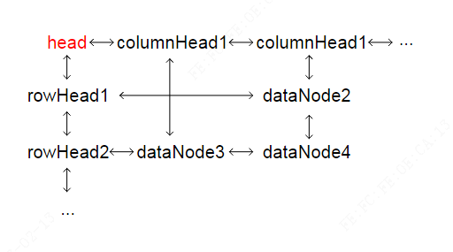

我打算自己做一个数独游戏，主要分为两步：
- 生成一个数独
- 验证玩家填入的数字是否正确
生成一个数独可以有很省事的办法，就是直接从数独库中随机选一个（甚至可以直接把空白都给你挖好）。也可以用暴力方法（回溯法），一行一行去填，进行不下去就回溯到上一步。
生成数独最高效的算法是：舞蹈链，实际上舞蹈链是一种数据结构，是为了X 算法而产生的，而 X 算法是用来解决一类问题：精确覆盖问题
插个题外话，我朋友说，东野圭吾的小说《嫌疑犯 X 的献身》，的凶手就在研究这个问题，有兴趣可以顺带看看，这小说挺有名的。
精确覆盖问题是一个 NP 完全问题，NP 问题的概念我差不多忘光了，得重新看看
精确覆盖问题
简单来说就是给定一个全集 X，和若干子集 S，从子集中选出 N 个，它们拼凑起来恰好（没有多余的元素，比如某个元素出现过两次）等于全集 X。
X 算法
维基百科的解说我看不懂，还好 OI-Wiki 上讲的足够详细：X 算法
解决精确覆盖问题，简单来说分为以下几个步骤：
建模
针对问题建模，建模成一个 01 矩阵，每一行代表一个集合，1 代表包含了集合 X 的某个元素（1 的位置，就是该元素在集合 X 中的位置），0 代表没包含
算法步骤
简化问题（缩小矩阵，删掉不再考虑的部分），递归解决子问题。
- 选行：选 1 出现次数最少的一列，然后从这列有 1 的行中随便选一行
- 删减：找到这一行的有 1 的那些列，去掉这些列，找到这些列上是 1 的行，去掉这些行
- 现已经得到了一个缩小版的矩阵，继续以上这种删减操作
- 单次深度搜索结束标志：得到一个空矩阵。是否有解：最后一次删除的行全部是 1，则说明问题有解，否则问题无解。总程序结束标志：回溯完所有可能的分支
这个算法很好的缩小了问题规模，非常典型的技巧
算法含义
每选择一行，代表着打算用这一行去精确覆盖全集，那么相应的：
- 每行只用一次，故删除选择的这一行
- 这一行中出现的所有元素（每个 1 代表一个元素出现），后续都不用再考虑，故删除相关列
- 跟它起冲突的行（同一列上有 1，代表有相同的元素，不符合精确覆盖），没法纳入解中，所以后续都不用再考虑，故删除这些行
以上三步可以保证每次选择的行，行之间是不会出现重复元素的。
结束标志也很好理解，最后一次删除的行，如果全部是 1，则标志着我们所有列都刚好填补上了元素。
这样我们就做到了全覆盖+精确覆盖，这两项要求。
算法的具体实现
具体代码实现，还有很多细节不清楚，参考资料：
经过两天的设计与辛苦调试，我自己实现了一份 TypeScript 写的代码：
https://github.com/liuqinh2s/Algorithm/blob/master/DancingLinksX/DancingLinksX.ts
与上面那个实现不同，我这个实现既有列头，又有行头，反正怎么方便怎么来。

数独怎么转化为精确覆盖问题
参考资料：https://zhuanlan.zhihu.com/p/67447747
在网上查阅了大量资料，但一开始都看不懂，且发现他们讲的基本上一模一样（天下文章一大抄），就跟前面舞蹈链一样，连配图都是一样的。
怎么把数独这个矩阵转化为精确覆盖问题的 01 矩阵，其实就是要想清楚，行和列的意义是什么？
行的意义
精确覆盖问题的核心要素是：一个全集 X，若干子集 S
那么我们先来想想全集是什么？
全集肯定是一幅完整的正确的数独答案
那每个子集是什么？
子集应该是单个格子的解，然后我们拿恰好 81 个子集，凑出全集。
每个格子有 9 种填法，81 个格子有 729 种填法，所以我们需要从 729 个子集中选 81 个出来。
列的意义
首先思考一下要往一个数独的格子里填入一个数字受哪些条件约束：
首先，这个格子里不能有数字，即为空
其次，同一行不能有相同数字
再次，同一列不能有相同数字
最后，同一个九宫格不能有相同数字
每个格子都有 4 个约束，81 个格子有 324 个约束，所以有 324 列，具体的每一列的含义如下：
第 0 列表示数独（0,0）位置是否有数字
第 1 列表示（0,1）位置是否有数字
……
第 8 列表示（0,8）是否有数字
第 9 列表示（1,0）是否有数字
……
第 80 列表示（8,8）是否有数字
以上 81 列表示数独的格子里是否有数字的约束条件，接着
81 列表示第 0 行是否有数字 1
82 列表示第 0 行是否有数字 2
……
89 列表示第 0 行是否有数字 9
90 列表示第 1 行是否有数字 1
91 列表示第 1 行是否有数字 2
……
161 列表示第 8 行是否有数字 9
以上为行的约束条件
162 列表示第 0 列是否有数字 1
……
242 列表示第 8 列是否有数字 9
最后，是九宫格的约束条件：
243 列表示第 0 个九宫格是否有数字 1
244 列表示第 0 个九宫格是否有数字 2
……
323 列表示第 8 个九宫格是否有数字 9
具体例子
我们拿 4*4 的数独来做例子（只用到 1 到 4 四个数，可以称之为 2 阶数独吧，比咱们常玩的三阶数独小一阶）：
1 | 0 4 0 0 |
这幅图转化成精确覆盖问题的矩阵是什么样呢？
1 | 第二个格子里填了数，其他没填 | 第一行填了数字4 | 第2列填了数字4 | 第1个4宫格填了数字4 |
上面用|划分了四个区域，每个区域的含义都详细说明了
从上述 01 行也能直接推出数独图，它们是可以互相推出的！
当然也可以用复合数独图，推出复合行，但是复合行可能无法推出单个具体数独图，因为存在一对多的情况，一个很简单的例子就是全 1 的行，对应的是抽象的数独解，而数独解是有 N 个的。
数独的全部解有多少个？
数独的总个数是这么得出来的。9!×722×27× 27,704,267,971=6,670,903,752,021,072,936,960（约有 6.67×10 的 21 次方）种组合，2005 年由 Bertram Felgenhauer 和 Frazer Jarvis 计算出该数字，如果将重复（如数字交换、对称等）不计算，那么有 5,472,730,538 个组合。那么有趣的来了，有个 9!=362880，这个就等于 9 的全排列，是不是可以从这里做突破口呢？如果我可以随机的生成 362880 个完整的数独矩阵，然后随机的每行挖去 4 到 5 个那就是
362880/24/120*9*362880=411505920个，这个数字够大家有生之年玩的了。--摘录自数独-- 一个高效率生成数独的算法 真实性有待进一步考证
数独求解
随便给出一个数独图，也就是相当于给出了舞蹈链中的一行，我们以这一行为入口，即可进行精确覆盖问题的求解，解空间是 729，对应的 01 矩阵大小是：729*324，不过还好是个稀疏矩阵。
有一个优化必须要说一下：每次选行的时候，选 1 最少的列上的某一行。
选 1 最少的列的意义是：寻找出现在所有子集中次数最少的元素，既然大家都很缺这个元素，那么基本上意味着凑全集合，很需要这个元素，那么就要优先选择这些元素
没加这个优化的时候，我的回溯一直在搞排列组合，无头苍蝇，跑了 60 多万次 dance 都没结果（几分钟都过去了），加了这个优化直接起飞，1 秒钟不到就解出来了。
我的数独求解代码：https://github.com/liuqinh2s/Algorithm/blob/master/SudoKu/SudoKu.ts
能直接在浏览器上跑的代码：https://github.com/liuqinh2s/Algorithm/blob/master/SudoKu/bundle.js
可以通过npm i @liuqinh2s/sudoku-js安装
能在线玩的项目：https://jujuxi.xyz/sudoku/
数独生成
以上只讲了如何解数独，那么如何生成数独呢：数独的生成过程是怎样的？ - 单想的回答 - 知乎
简单来说就是：随机放入 11 个数，求解出终盘，然后挖洞。
数独背景知识
初级课堂（3）|数独比你还优美，还有个性！
比较精美的数独网站：Sudoku.com